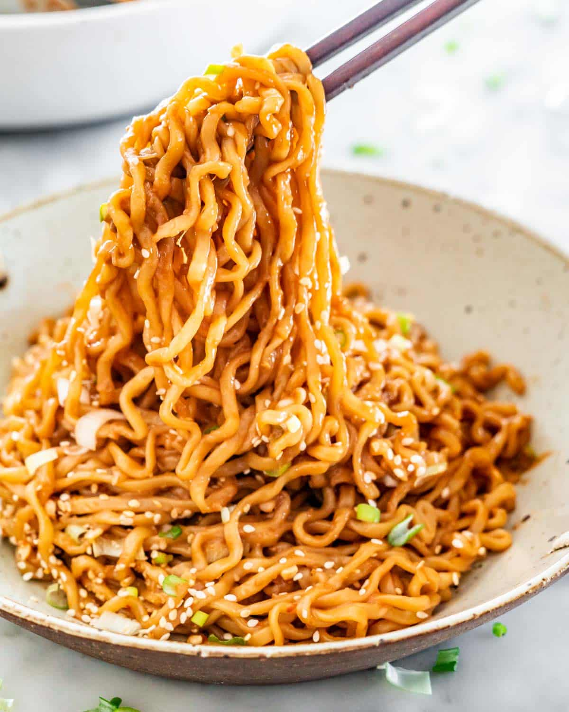

Noodles

What kinda noodles we talkin about?
These are perhaps the most bomb ass fantastic noodles you will ever eat,
and I'm going to tell you how. Its a simple recipe too, and you can make it any time
Ingredients
- Your favourite instant noodles (I prefer nong shim)
- Butter
- Milk
- Your toppings of choice. Mine are:
- Seaweed
- Crab sticks
- Some kind of pork
Steps
- Cook the noodles to your liking (I like al dente)
- Drain the water from the noodles, but keep them in the pot
- Add 1 tbsp of butter, 2-3 tbsp of milk and about 1/4 of the seasoning packet
- Mix, and add your toppings